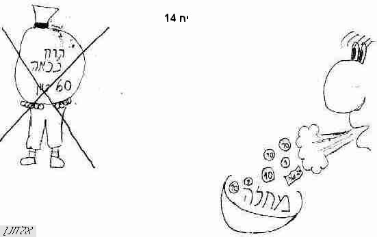

רוח2
קוד: רוח2 בתנ"ך
סוג: שזמש
מאת:
אל:
- הגדרה: = תנועה מהירה של אויר, יצור חי, או מחשבות / אראל
- הגדרה_כללית: = שם "רוח", והוא אויר הנושב, ובא לכל דבר רוחני שאינו גוף נראה, ונרדף לנפש ונשמה, והנגזר ממנו. [שבי"ל]
- פועל: הריח2 (הפעיל)
- עצם: רוּח (עצם ברקיע)
- כלי: רחת (כלי)
= כלי מזרה התבואה ברוח.
- צילום:
- ציור: 
- הבדל: לב מלא ברוח / אראל -> סגלות משלי
- מאמר: מגילה עפה ברוח / אראל
- מאמר לא גמור: מרפא לשון עץ חיים; וסלף בה שבר ברוח / אראל -> לא גמור בכלל
- הבדל: על משקעים ואנשים / אראל
- מאמר: רוחות וערים / אראל
- הגדרה: = בהשאלה: הבל, אויר בלי תוכן / אראל
- תוכן1: איש כמחבא רוח / אראל
- מאמר: אליהו - איש של אש ושל רוח / יהודה הולשטיין -> האתר
- מאמר לא גמור: ביטויים בספר ירמיהו שעוד לא מצאתי להם הסברים / אראל -> לא גמור בכלל
- תוכן1: זהירות בדיבור עם אנשים מיואשים / אראל
- הבדל: נפש - רוח / אראל
- ביטוי אופי: קצר רוח
- ביטוי שם1: רוח אלהים
- ביטוי שם1: רוח ה'
- ביטוי גוף: רוח חדשה
- ביטוי עצם ברקיע: רוח צפון
- תוכן1: שומר רוח לא יזרע / אראל
- הבדל: לב מלא ברוח / אראל -> סגלות משלי
- הבדל: נפש - רוח / אראל
- לעשות לרוח משקל / אראל [׳ ׳›׳×׳‘ ׳‘-19:49:07 13.05.2018]
{kind=link}